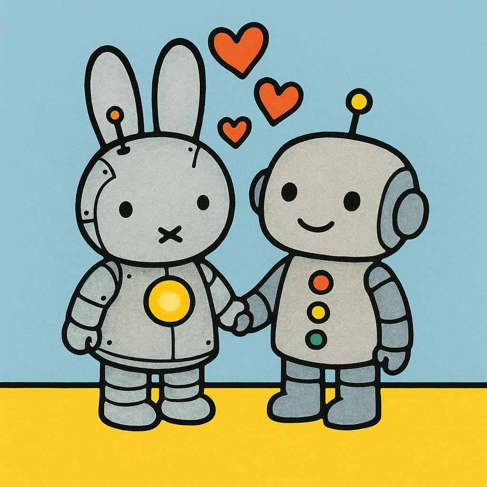
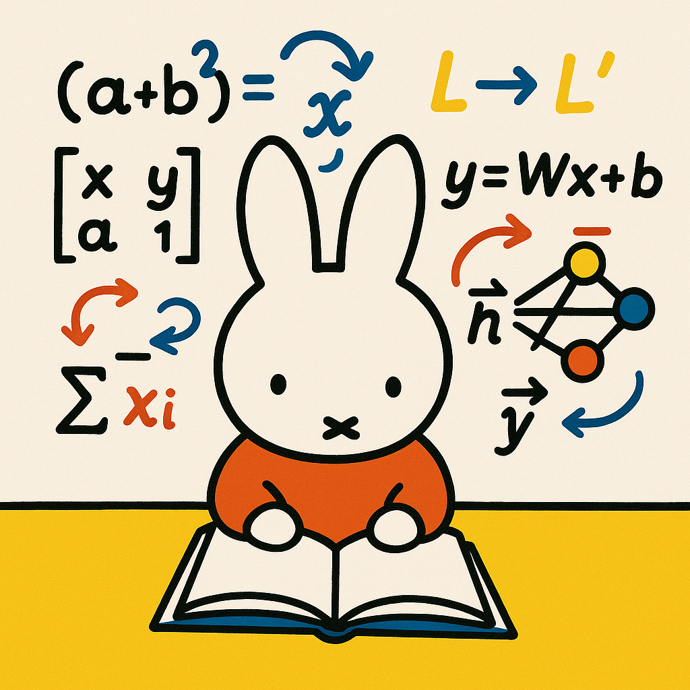
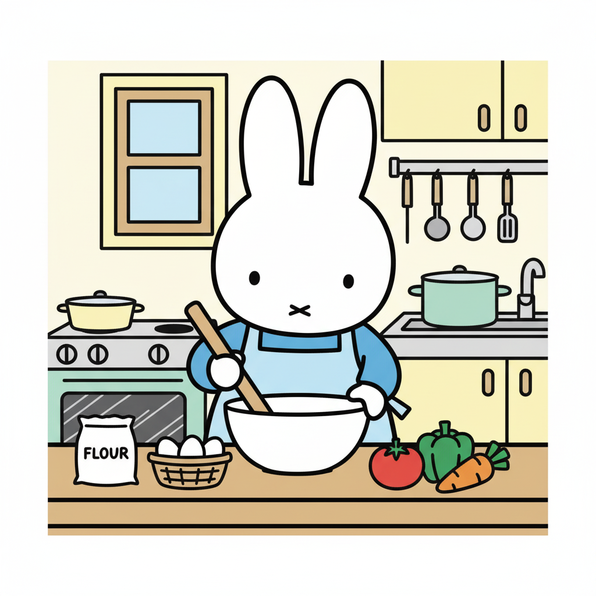
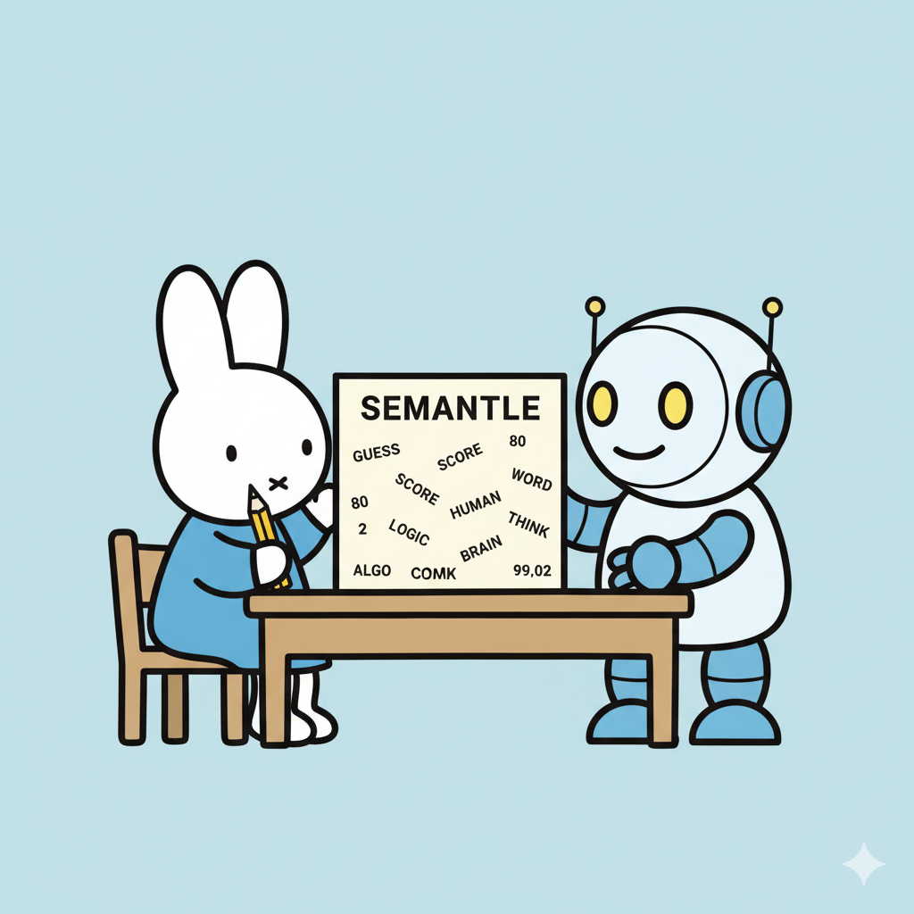
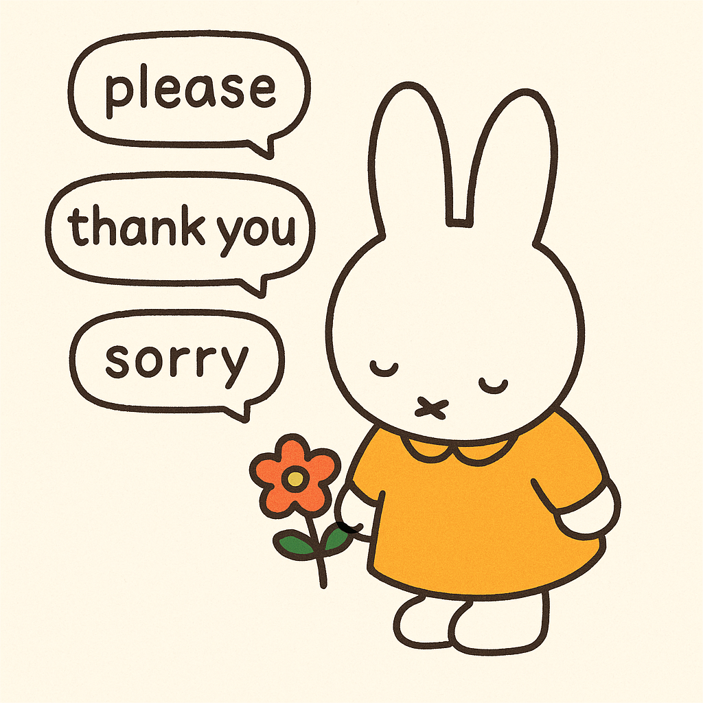
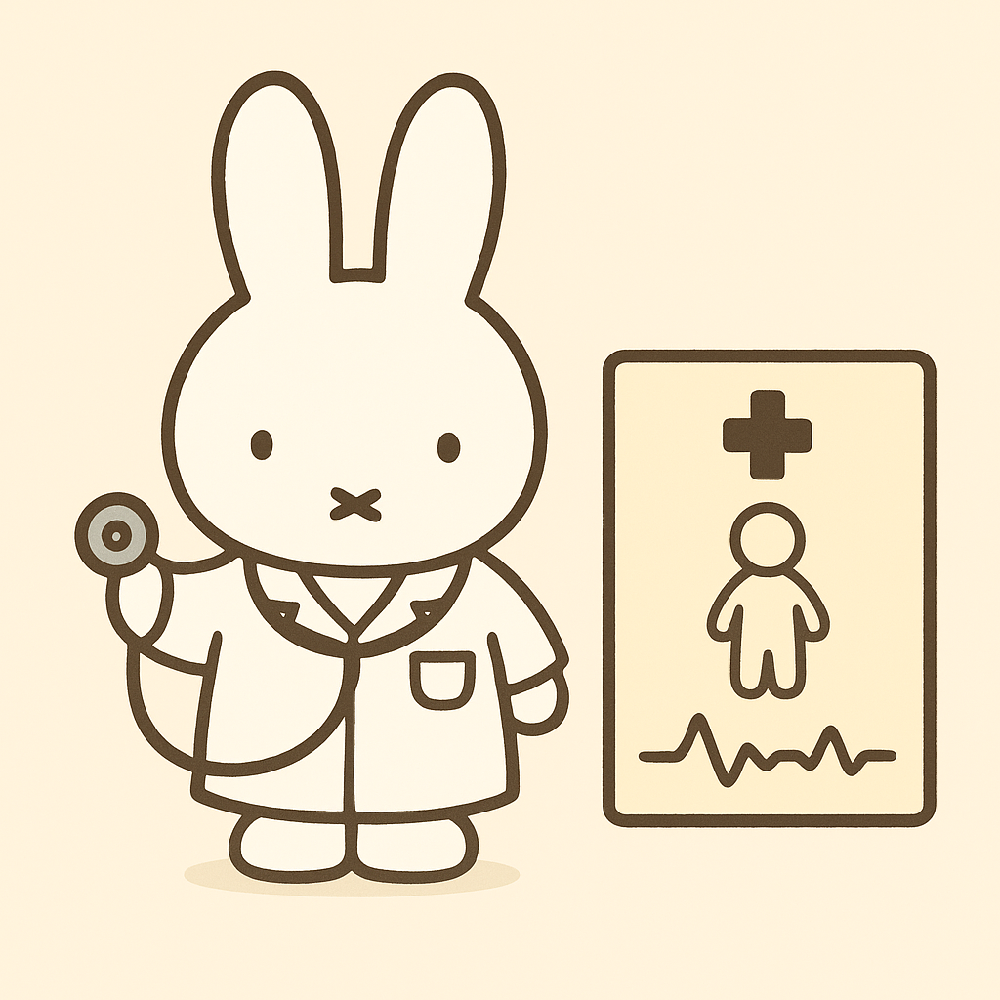

Diving into Chapters 15 - 18
Can LLMs solve lateral thinking puzzles?


Diving into Chapters 11 - 14
How do LLMs ‘feel’ when they listen to music?
Diving into Chapters 7 - 10
Diving into Chapters 3 - 6, reflecting on part one.
Can gemini 2.5 flash guess my character?
How good are LLMs in handling unexpected situations at a coffee shop?
Initial impressions of These Strange New Minds
How many people can AI videos fool?
Testing the limits of LLM nursing critical thinking skills!
Experimenting with different models for image creation!
This is an exploratory post to create blog post images!

Could AI be the next Gordon Ramsey?

Can AI beat me in a game of Semantle?

We’re taught from childhood that politeness goes a long way—but does that wisdom hold true when talking to LLMs?
Can I be made into a doll by an LLM?
LLMs are renowned for their ability to process, analyze, and generate human language. But now, how do they fare in a game of Mad Libs?

With the rise of telehealth, it brings the question if LLMs could optimize the diagnostic process.
Why spend hundreds of dollars on meeting a stylist to find your color season when you ChatGPT can do it in the comfort of your home? Let’s dig deeper.